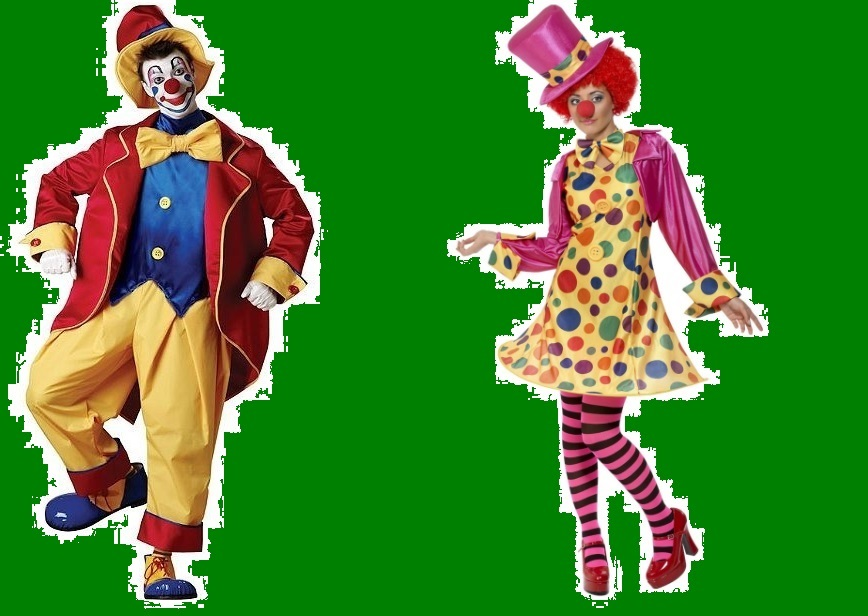
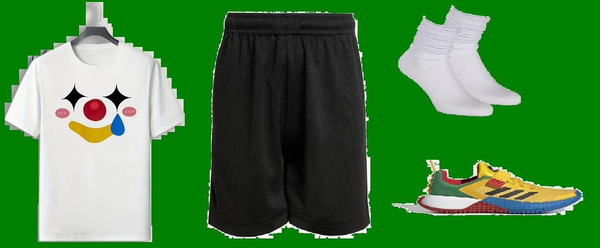

Jak powienien wyglądać przykładny uczeń w naszej szkole????
Ważna informacja na końcu strony *
Strój codzienny
Strój codzienny powinien oddawać ducha szkoły oraz być najbardziej lubiany przez uczniów. To właśnie przy ich pomocy stworzony został nowy mundur dla Pań i Panów. Oto one:

Strój inspirowany był cytatem: "Kto do Śląskich chodzi, ten w cyrku się nie śmieje." - słowa pewnej Pani profesor uczącej w głównym budynku Szkoły.
Mundur wyposażony jest w wygodne buty, dzięki którym nogi nie będą boleć nawet po lekcjach od 7.10 do 17.25.
Szerokie spodnie zapewniają komfort siedzienia oraz 2 duże kieszenie.
Marynarka posiada wiele kieszeni na przeróżne ważne rzeczy. Zmieszczą się do niej:
- klucze
- telefon
- portfel
- kwiatek psikający wodą
- trąbka
W imię "wyrażania siebie" strój kobiecy mogą nosić zarówno i mężczyźni i kobiety.
Strój kobiecy różni się tylko rajstopami oraz sukienką.
Strój galowy
Kiedyś strojem galowym była biała koszula zamiast niebieskiej, lecz uczniowe zadecydowali by mogli nosić ją naprzemiennie, więc biała koszula jako strój galowy straciła na wartości.
Strój na WF
Strój na WF jest dość prosty, białe skarpetki i czarne spodenki, lecz urozmaiceniem tegą są buty i koszulka nawiązujące kolorystycznie i tematycznie do stroju codziennego.

*Strona została zrobiona w celach humorystycznych. Nie ma ona na celu nikogo urazić. Osobiście nie jestem za zmianą dotyczącą koszul, ale nie mam problemu z uczniami chodzącymi w białych koszulach.